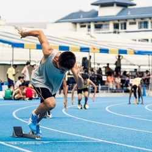
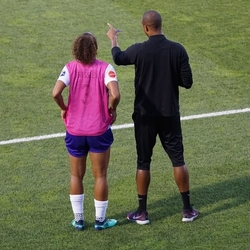
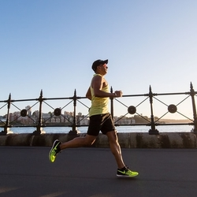
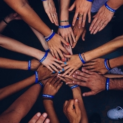

Coaching
Als sportcoach staat Evert klaar om je te coachen tot je je eigen opgestelde doelen bereikt! Hij coacht ook niet alleen op vlak van sport, maar ook op vlak van voeding of motivatie. Zo zal je in een mum van tijd bereiken waar je altijd al van droomde! Het coachingprogramma is op jouw maat en tempo opgesteld zodat je je doel zeker haalt.
Testen
Denk je eraan een marathon te lopen? Of een triathlon? Of misschien zelfs een ironman? Dan staat Evert voor je klaar om jouw te testen zodat je een goed beeld krijgt van hoever je al staat! Aan de hand van een inspanningstest zal Evert je conditie beoordelen en daarna krijg je een professioneel advies op maat.
Privétrainer
Wil je een doel bereiken, maar je weet niet hoe? Je ziet er geen beginnen aan? Als je nu gewicht wil afvallen of een marathon wil lopen dan is privétraining iets voor jou! Evert zal je persoonlijk coachen op een constructieve manier waardoor je jouw doelen op je eigen tempo kan bereiken. Hij zorgt er ook voor dat je resultaten duurzaam zijn en dat ze niet in één, twee, drie weg zijn, maar langere tijd blijven!
Professioneel
Je hebt al veel ervaring met marathons en triathlons of sport in het algemeen? Maar toch wil je nog verbeteren? Dan ben je bij Evert van EDJ Coaching aan het juiste adres! Hij houd rekening met hoever je al staat en zal je extra coaching op maat geven zodat je nog beter kan worden! Coaching tijdens wedstrijden? Geen probleem, Evert loopt gewoon mee! Zo haal je zeker die eindstreep!
Voor bedrijven
Is er wat spanning tussen de collega's? Of wat stress op de werkvloer? Of wil je er gewoon eventjes tussenuit met de collega's om de band te versterken en wat te ontspannen? Dan kan je bij EDJ Coaching kiezen uit een aanbod van spinning, pilates, conditiegym, loopwedstrijden, bootcamp, voetbal en zelfs hoogteparcour!